NeoAPRS
A modern, easy-to-use APRS client: the stations you hear on a map, messages that get acked, weather, the beacon. One app, or a service you open from anywhere at home, on a laptop, a tablet or a phone.
$ curl -LsSf https://github.com/oh2gba/neoaprs/releases/latest/download/install.sh | sh

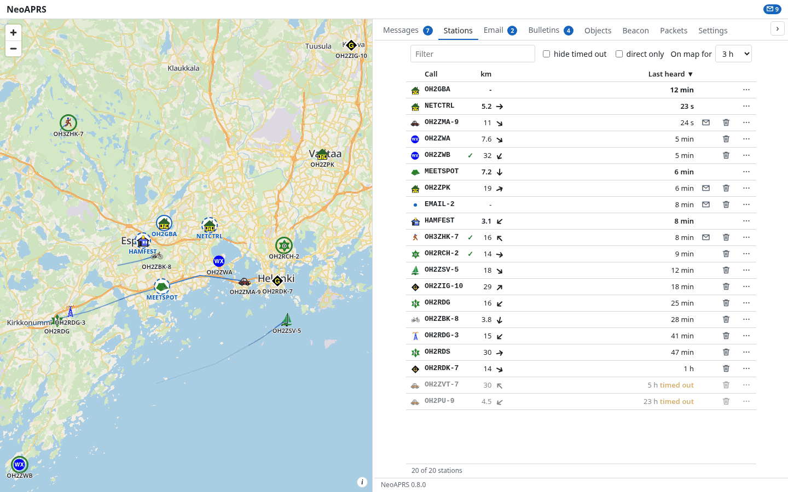
- Windows, Linux and Raspberry Pi
- RF only: your radio, no iGate
- Free software, GPL-3.0-or-later
- Phone, tablet and desktop
- English, Deutsch, Español, Français, Italiano, 日本語, Português
- Light and dark, as your system is
The map
Everything you hear, on one map
- APRS symbols and calls on a street-level map of your area, made once and kept on your disk.
- Trails that fade with age. A green ring marks a station heard direct; markers dim as a station ages.
- Point at a station for a quick card: status, comment, distance, how it reaches you. Click it for the full card, and its route is drawn on the map, through each digipeater.

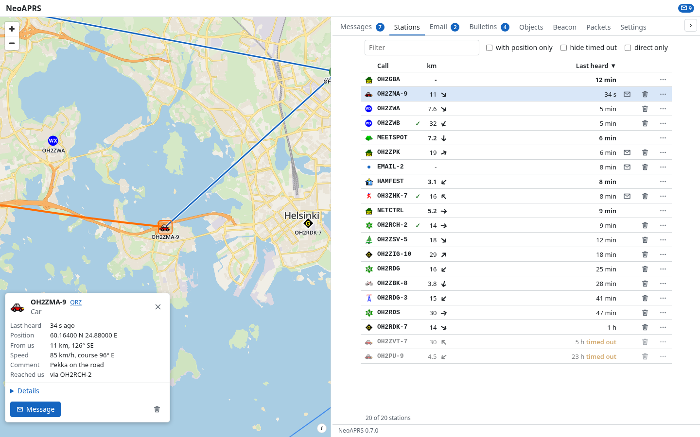
The Stations table
- Sort, filter, hide the timed out, keep the stations heard direct.
- Distance and bearing from you (a small arrow), when each station was last heard, and a check mark for the ones heard direct.

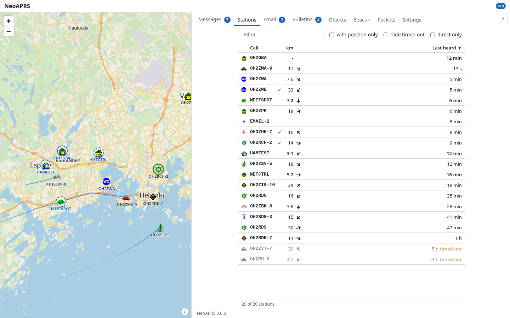
Several stations at once
- Ctrl+click (Cmd+click on a Mac) on a marker or a row of the table adds a station's card beside the others: each one is the whole card, up to four on a desktop.
- Close all, or Message these 2 to send one text to each of them.

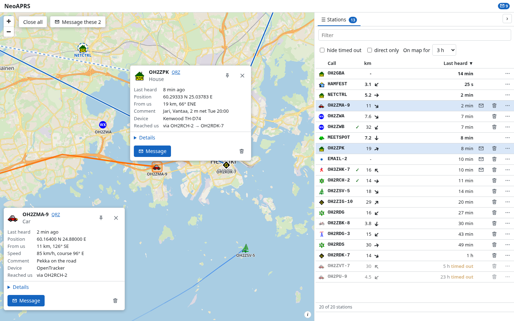
The packet log
- Every packet as it was heard, and the route it came by.
- Click one to see what the parser made of it.

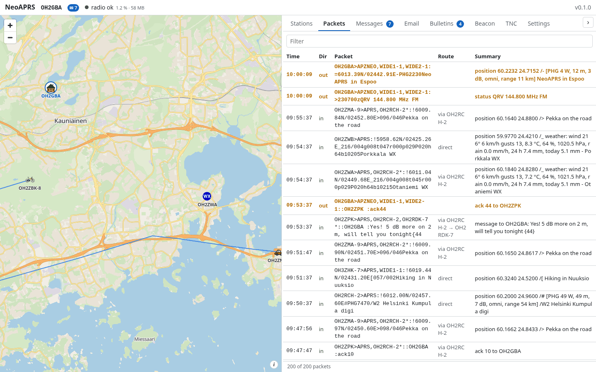
Messaging
Messages that arrive, and proof that they did
- Acks, reply-acks and retries are done for you.
- The delivery chain of every message: each digipeater you hear repeat it turns green, one you do not hear stays grey with a ?, a copy that came back from the internet is blue.
- The conversations in a list beside the open one, as in a chat app; one text to several stations at once from their cards.
- A path for each station. Alerts on the desktop and in the browser, bulletins and group messages, and the APRS queries.

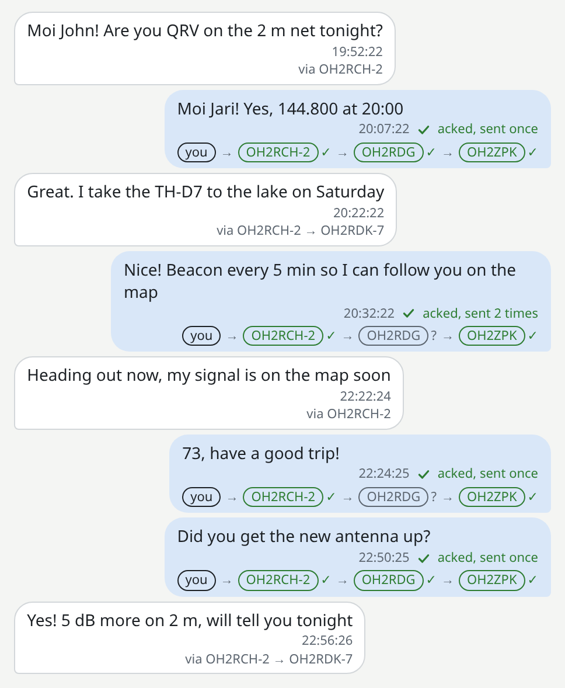


Weather
Weather stations, with graphs
- Temperature, wind and gusts, humidity, pressure and rain, as the station reports them.
- 24 hour and 7 day graphs of temperature, pressure, wind and rain, drawn in the page's own colours.
- Open several weather stations side by side: their graphs share the same scales, so the curves can be read against each other.

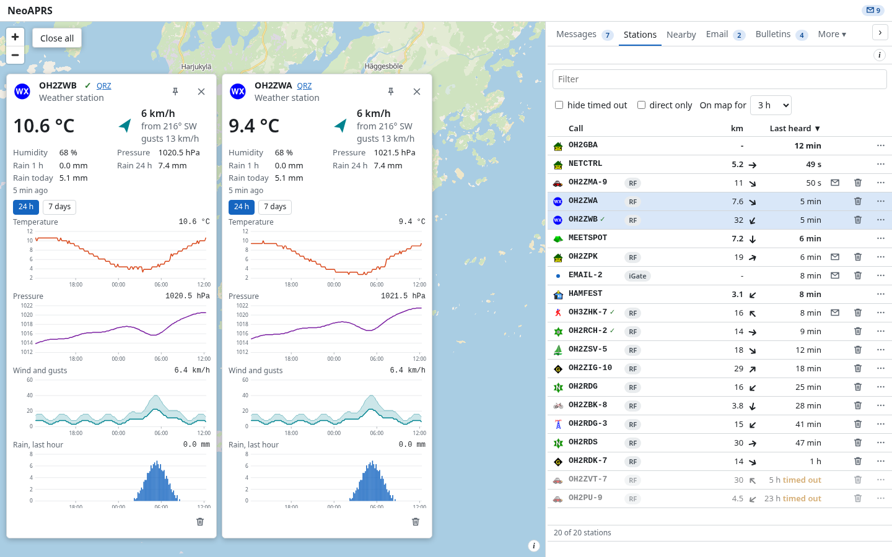
Beacon and status
Your position, on your terms
- When the last beacon went out, with Beacon now and Send status now, and the beacon every 15, 30 or 60 minutes.
- Your place picked on the map, your symbol picked from pictures, and a preview of the packet it makes.
- A status report from your radio through Hamlib rigctld, or a text of your own: one choice, and only the fields it needs.
- A fill-in digipeater for WIDE1-1, one tickbox, off until you switch it on.
- Settings apply as you change them: no Save button, and an Undo for the last change.
- Nothing is transmitted until a call is set.

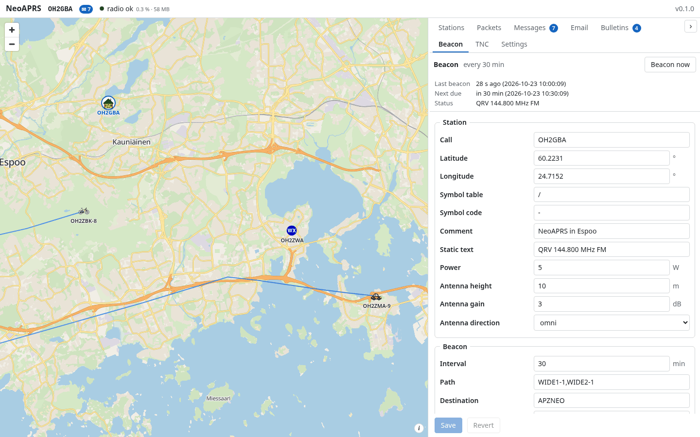
Email and bulletins
Email through the APRS gateway, and the message board
- Email in a tab of its own: send a mail from a box at the bottom, with Check email for the mail the gateway kept for you.
- Announcements, bulletins and group messages on a board: who sent each, to which slot, how often it was heard.
- Post your own to the board from a box under it: a bulletin, an announcement or a group bulletin. It goes out a few times early and then at long intervals, and sits on the board marked ours.


Objects and items
Your own objects, on the map and on the air
- A net control point, a meeting place, an event: an object or an item with a name, a symbol and a comment.
- Click the map to place it, drag its marker to move it. Yours carry a dashed ring.
- Sent on the specification's schedule: at once, then after 1, 2, 4 minutes and so on, up to the net cycle time of its path.
- Nothing is transmitted until a call is set.

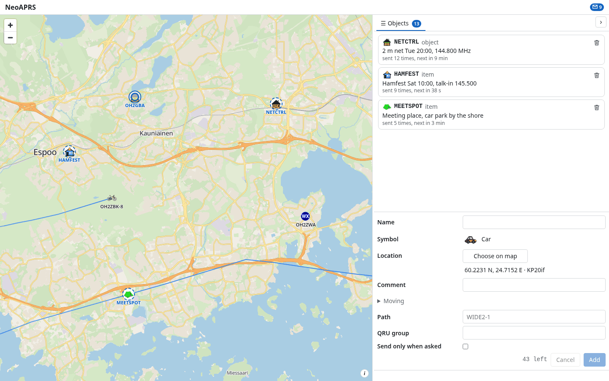
Make one, change it, kill it
- The Objects tab lists them with how often each was sent and when it goes out next.
- Edit opens the form: symbol, position, comment, course and speed, and a path of its own.
- A kill is sent three times and the object is gone from the map and from the air.

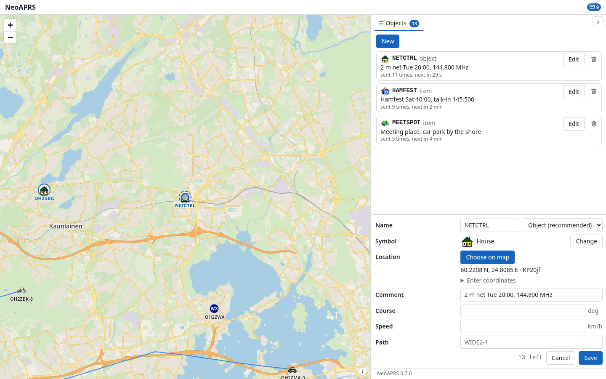
Where it runs
On your computer, or in the shack and opened from home
Standalone app
The page in a window, with a tray icon. Windows and Linux.
A service on a Raspberry Pi
The radio and NeoAPRS in the shack. The page open on a laptop or a phone at home.
the page
the page
neoaprs service install --linger
Open it from another device
- Switch on Allow access from the network in Settings. The page shows an access key and the addresses to open.
- Type the key once on each laptop or phone. An optional secure connection (https), with a certificate NeoAPRS makes itself, is one tickbox away.
- The page fits a phone and a tablet as well as a desktop: on a phone one view at a time, the map or the open tab, a station's card as a sheet from the bottom.
- A message to you alerts in that browser too: a sound, and a pop-up where the browser allows one (Settings, Notifications).

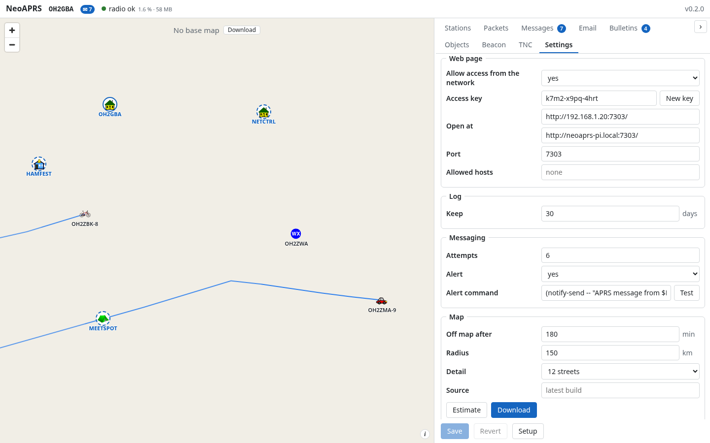


First start
Five steps, then you are on the air
- Call, position, symbol, radio, map.
- Until a call is set NeoAPRS only listens.
- The map of your area is made once, in a few minutes of internet.
- Once a day it asks whether a newer version is out, sending its version and system and nothing else.
- A new version shows in the footer with the steps to update your copy; open pages load it by themselves.
- On a computer or an Android phone the page can be installed as an app of its own, from localhost or an https address.

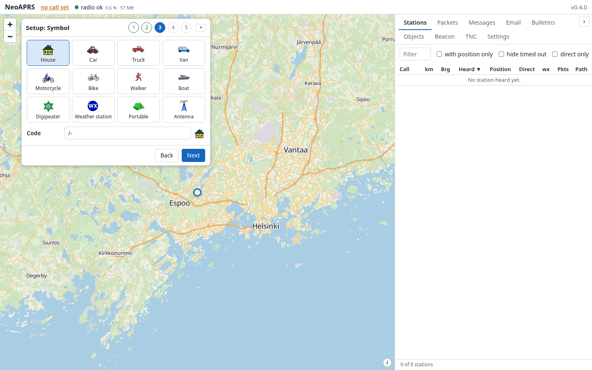
Works with
Radios and TNCs
| Radio or TNC | Connects by |
|---|---|
| Kenwood TH-D7, TM-D700, TS-2000; TNC-2 clones (MFJ-1270B/1274/1278, TAPR) | serial, 9600 |
| Kenwood TM-D710, TH-D72 | serial or USB |
| Kenwood TH-D74, TH-D75 | USB or Bluetooth |
| Mobilinkd TNC3, TNC4 | USB or Bluetooth |
| BTech UV-PRO, Vero VR-N76, Radioddity GA-5WB (untested) | Bluetooth |
| PicoAPRS V4 (untested) | Bluetooth, USB-C or TCP |
| NinoTNC, TNC-Pi, TNC-X, any TNC already in KISS | USB or serial |
| Kantronics KPC-3+ | RS-232 |
| Any radio with a sound-card interface (Digirig, SignaLink, USB dongle), through Direwolf or a soundmodem | KISS over TCP |
On Linux a Bluetooth radio paired with the computer is picked from the Port list by its name, with no extra steps. Yaesu and Icom radios have no KISS TNC for a computer: use a sound-card interface and Direwolf. The radio guide marks which entries are tried on the air and which follow the radios' manuals and users' reports.
Get it
Download and run
Windows
Run the installer. No administrator rights are needed. SmartScreen may warn about an unsigned installer: More info, Run anyway.
Windows installerRaspberry Pi, Debian, Ubuntu
The .deb for your machine (arm64 for a Pi, amd64 for a PC) brings its own Python.
Raspberry Pi .deb$ sudo apt install ./neoaprs_*.deb && neoaprs service install --linger
Linux, macOS, Raspberry Pi
Installs uv and NeoAPRS and starts it as a service of your user.
$ curl -LsSf https://github.com/oh2gba/neoaprs/releases/latest/download/install.sh | sh
No radio at hand?
The sample capture that comes with NeoAPRS plays as a TNC on a TCP port, so you can try the page first. How
$ neoaprs replay
Gallery
All the screens
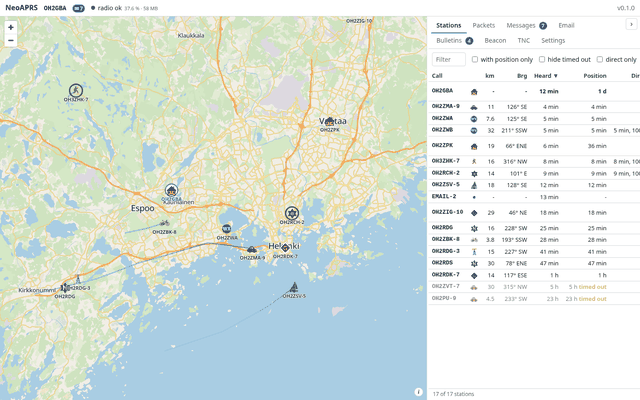
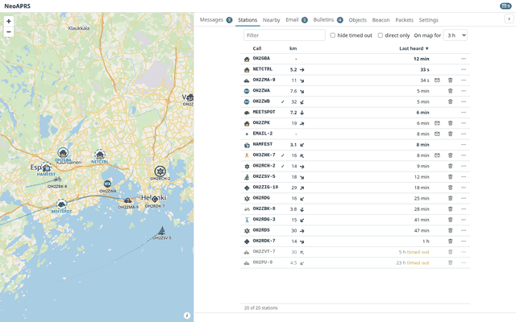
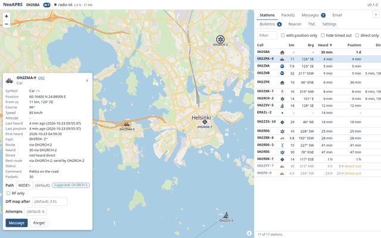
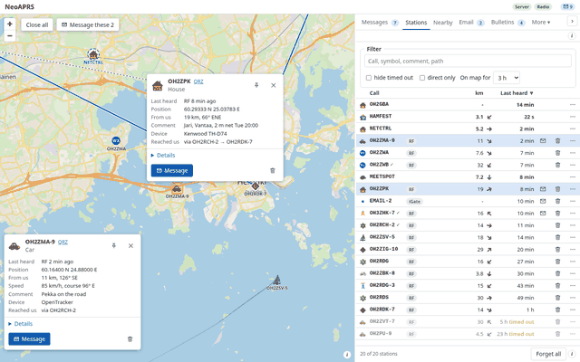
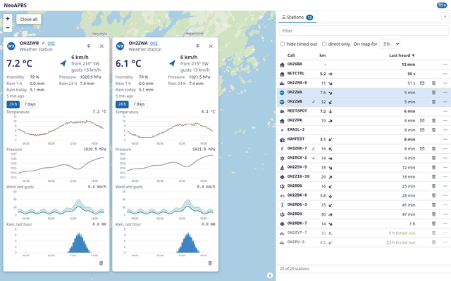
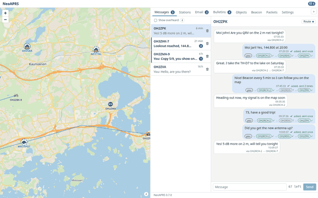
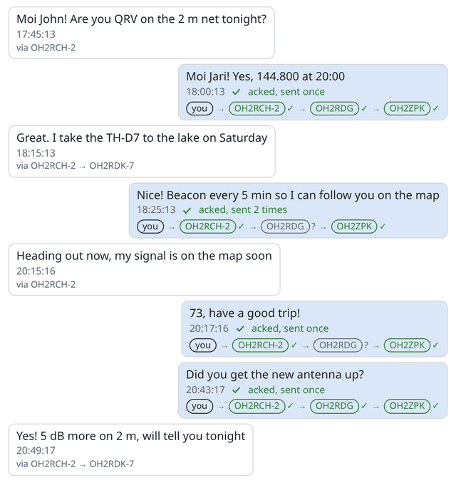
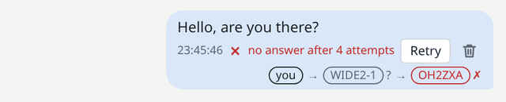
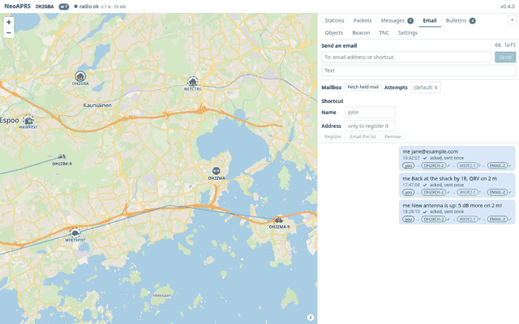
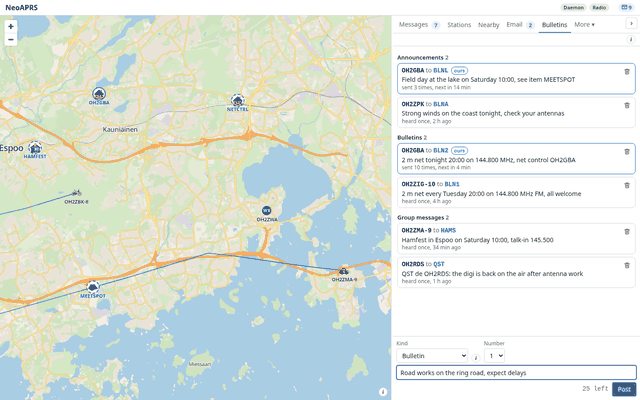
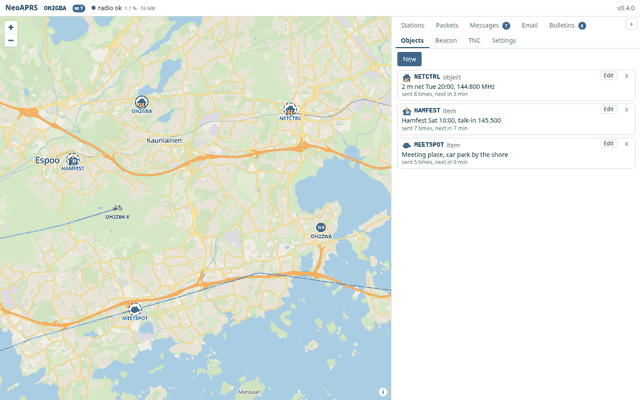
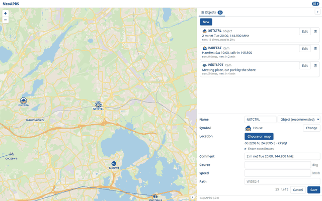
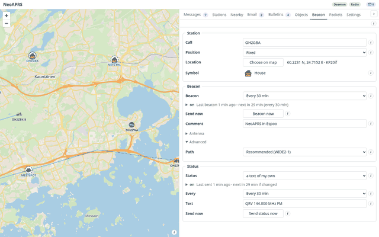
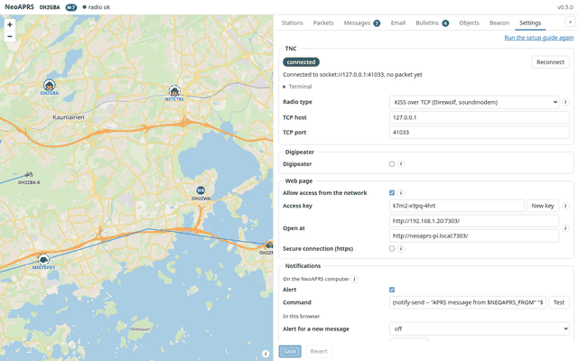
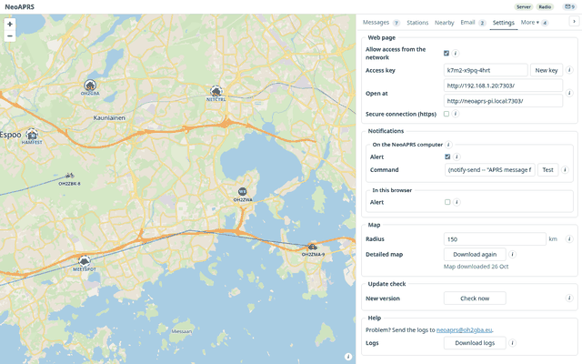
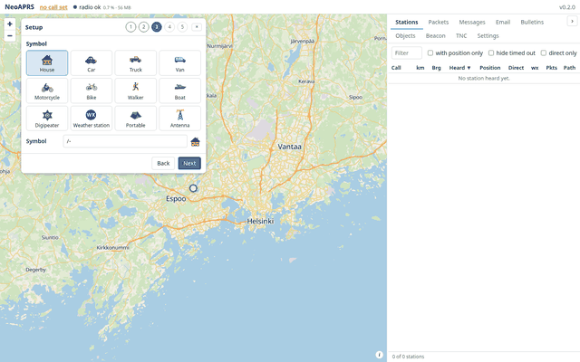
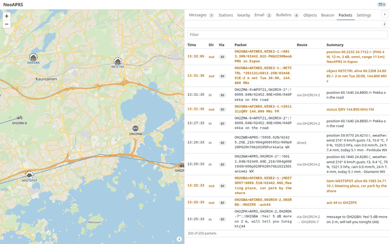
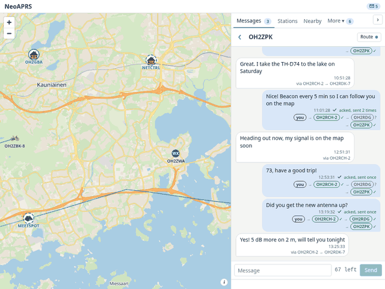
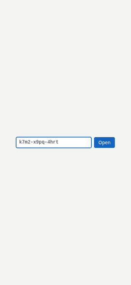
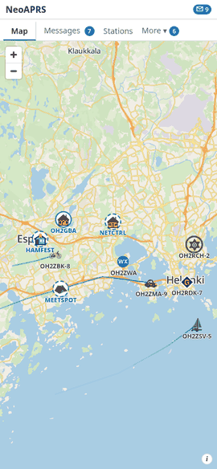
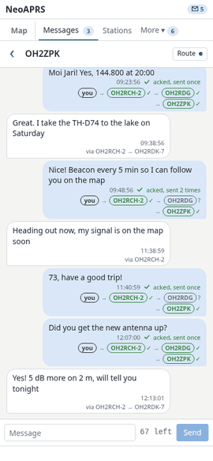
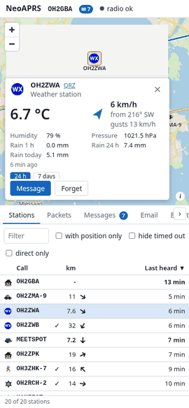
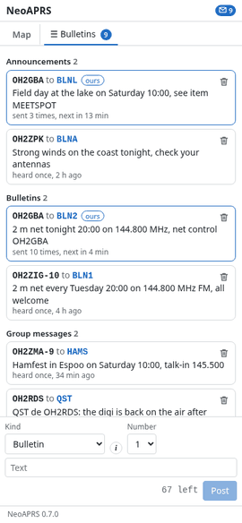